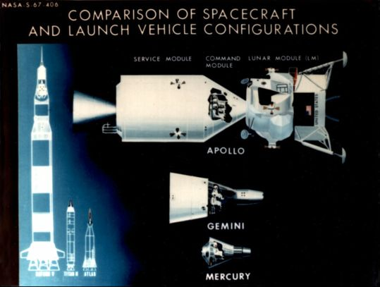

Once all the vehicles in the Apollo stack had been decided on, those already being developed would have to be changed to fit the new concept of Apollo. Most immediately affected was North American's command module. The shape of this craft, a conical pyramid much like the bell-shaped Mercury, had been set very early. This blunt-body vehicle, however, had been designed only for earth-orbital and circumlunar flight, with some thought given to attaching propulsion stages to make a direct-flight, lunar-surface landing sometime in the future. Adoption of lunar-orbit rendezvous eliminated the need to land the command module on the moon but forced the inclusion of some means for docking that vehicle with the lunar module and transferring two astronauts into the lander for the trip down.
Command module development, then, took two routes. Configurations, systems, and subsystems had to be qualified and astronauts had to be trained in Apollo operations, which could be done in earth-orbital flight. It was therefore unnecessary to make any major changes on what came to be called the "Block I" spacecraft. But the time limitation set by the President did not permit waiting for the first version of the spacecraft to be completed and tested before starting on an advanced model, Block II, that could perform the new docking operation. The two spacecraft had many components in common, but development had become infinitely more complicated. Deputy Administrator Hugh Dryden termed the Apollo program "the largest, most complex research and development effort ever undertaken."1

Comparison of spacecraft and launch vehicle configurations.
All three of NASA's manned space flight centers - at Huntsville, Canaveral, and Houston - had their hands full during 1963 and 1964. Marshall was wrestling with the mammoth Saturn V development program; neither of the propulsion systems, the F-1 and the J-2 engines, could be simply picked off the shelves and fitted with appropriate oxidizer and fuel tanks. There were troublesome days ahead before the contractor, Rocketdyne, succeeded in developing and qualifying these engines so they could be trusted to boost astronauts toward the moon.2 At the Cape, the Launch Operations Center was doing some educated guessing about the flight preparation facilities needed for the spacecraft and launch vehicles. And the Manned Spacecraft Center was working on three major programs: flying the last Project Mercury spacecraft (Mercury-Atlas 9) in May 1963 and getting spacecraft development under way in both Project Gemini and Project Apollo. Because of its modular configuration, Apollo had no immediate need for day-to-day coordination among the centers, which freed the program offices to work independently in solving their more pressing problems. But the program needed to be centrally managed - technically as well as administratively - far differently from Mercury, and it would have to be armed with a larger force to accomplish this. NASA Headquarters had, therefore, to become more technically oriented and would have to participate more in the daily activities of the program.
1. Hugh L. Dryden, foreword in Astronautics and Aeronautics, 1963: Chronology on Science, Technology, and Policy, NASA SP-4004 (Washington, 1964), p. iii.
2. J. Leland Atwood to James M. Grimwood, 27 Oct. 1976.